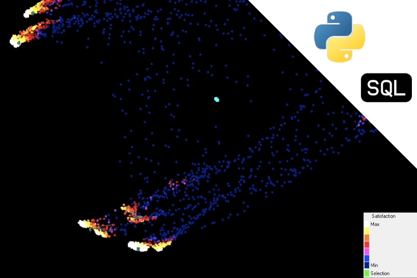

During my Bachelor's, I have acquired valuable theoretical
knowledge in the fields of Business, Mathematics, and Computer Science, as well as
proficient capabilities with various software tools and programming languages.
Moreover, I had the opportunity to gather seven months of working experience as
a Data Science Intern for Sentient Information Systems, where I briefly worked
alongside experts in the domain. Apart from that, I have dedicated my time
volunteering for three study associations, namely SABA, Enactus, and ESN,
and the university, as an International Student Ambassador and Buddy.
Currently, I am working as a Data Science Intern for OMRON Healthcare Europe.
Portfolio

Berth Allocation Problem within Port of Amsterdam
Jun 2020 ~ BSc Thesis Internship at Port of Amsterdam
Port of Amsterdam demanded to know if giving up the current First Come, First Served
strategy of assigning vessels to berths would produce any benefits, especially after
the new sea lock will be ready and (more) larger ships will be allowed to moor in
the harbor
Comparison of 3 Machine Learning models on predicting house prices
Mar 2020 ~ BSc Course "Machine Learning"
Built, trained, tuned, and tested three Machine Learning models,
namely Linear Regression, Random Forest, and Gradient Boosting, comparing their
prediction power (RMSLE) on the house prices

Research of DataDetective's segmentation algorithm
Jan 2020 ~ Internship at Sentient Information Systems
The first part of the research involved seeking a measure of the
similarity matrix that would provide an insight into its relationship with the
generated clusters, followed by investigating the increase in the number of
connections in the similarity matrix and assigning them a weighting scheme
Predicting the fertilizer’s moisture at a crucial point in the process of ICL
Jan 2020 ~ Internship at Sentient Information Systems
Based on the circa 200 parameters logged on a minute basis, built an
Artificial Neural Network that continuously predicts the moisture level of the
fertilizer at a crucial point in ICL's factory process
Foorball leagues comparison
Jan 2020 ~ Minor Course "Data Wrangling"
Acquired, explored, and wrangled data to compare the five most important
football leagues in Europe from two perspectives: watching and betting
Predicting if a Kickstarter project will be funded
Oct 2019 ~ Minor Course "Introduction to Data Science"
Built two Machine Learning classification models that predict whether a Kickstarter
project will be founded or not
Identifying trends and extracting insights from Washington DC properties sales
Jun 2019 ~ BSc Course "Project Big Data"
Exploring and manipulating big data with the help of Python (Pandas, NumPy)
to extract correlations, trends, and insights about properties sales

Finding the optimal vaccination strategy for limiting epidemic outbreaks through simulation
Jan 2019 ~ BSc Course "Business Simulation"
Inspecting and modeling the spread of epidemics based on various vaccination strategies

Determining the optimal number of beds for hospital wards with the help of simulations
Jun 2018 ~ BSc Course "Project Business Analytics 2"
Investigated the trade-off between money saved by removing beds and
the decrease in the hospital's rejection rate
Creating the optimal working schedule for a call center
Jan 2018 ~ BSc Course "Project Business Analytics 1"
Provided a data-driven working schedule such that the service level is always above a certain level
and the number of employees is minimized
Finding the decisive factors in resigning to reduce the attrition rate
Dec 2017 ~ BSc Course "Introduction to Business Analytics"
Gained insights into what factors are associated with employee attrition
using Watson Analytics, such that the employer could address them and prevent people from leaving
Finding the optimal replacement strategy for Ricoh’s printers’ fuser units
Oct 2017 ~ BSc Course "Introduction to Business Analytics"
With three available replacement options, namely Preventive (€70),
Corrective (200€), and Opportunity-based (€0), the probability of failure for each
machine was computed based on the number of copies printed, suggesting the optimal
replacement strategy
-
Address
Amsterdam, Netherlands